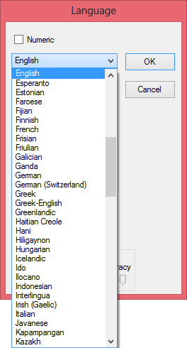

Tweet
Tweet
State-of-the-art OCR software is multilingual and easily supports over 100 languages. (In the beginning of the 90s, an OCR package supported something like 10 to 15 languages, all of them Latin-based!)

(I’m now talking about the languages that the software can read, not the languages of the user interface. It hardly matters whether you prefer to install a Danish or Turkish version of the software or consult a Chinese user’s manual. The major OCR packages are available in some 15 localizations — no complaints here!)
With the major OCR packages, you can now read the American, Western European, Eastern European and Baltic languages, the “Cyrillic” (Russian) languages, Greek and Turkish.
Some of the languages that are supported may seem so exotic — are you familiar with Bislama or the Philippine language Kapampangan? — that you’ll doubt they even exist! Here’s a sample from both languages to prove you wrong…
Bislama
Mifala i stanemap Saot Pasifik Projek Fasility blong mekem
se ol praevet bisnis we ol bisnisman blong ol aelan blong
Saot Pasifik nao oli sponsarem mo oli onem oli save kam
antap kwiktaem moa, blong mekem se ikonomi hemi gru mo i
gat wok blong ol man blong Saot Pasifik long wan wei we
hemi save gohed oltaem. Fasiliti hemi mekem wok blong hem
blong givhan long ol bisnisman blong ol aelan long Saot
Pasifik we longtaem finis nao oli harem se i gat nid blong
wan samting olsem. Hemi givhan long saed blong mekemrere
wan projek mo blong karem lon, hemia blong ol smolsmol
bisnis wetem ol medel bisnis we mane blong olgeta i no naf
blong mekem hemia bifo i kam.
Kapampangan
Lebagan do ring karapatang pantau ding dakal a tau. Ding
gera at aliwa pang kararaptanan ilang bibie pasakit karing
tau agpang king istorya at king mabilug a yatu. Ing yatu a
nung nokaring ding tau atamasa ra ing karapatang magsalita
nanu man ing a isip da, mamili king sarili rang
kapaniwalan, at mangabiyayang alang takut at alang
pamikakunu king nanu mang kaburian yang dapat mag-ing peka
maulaga king keka tamung kapagnasan.
Here’s a nice bit about the “lingua franca” or “pidgin” language Bislama, the official language of the Republic Vanuatu, formerly known as the “New Hebrides” and located to the east of Australia. This Creole language is English with a broad accent and a simplified grammar. The words “bisnis” and “bisnisman” in the first line mean what you think they mean! Complex ideas and new concepts are described functionally. Historically, some objects were so unfamiliar to everyday use that their functions are described in full. The classic example is a piano: “Wan bigfala blak bokis hemi gat waet tut mo hemi gat blak tut, sipos yu kilim smol, hemi singaot gud.” Literally, this means the following: “One big fella black box, him he got white tooth and him he got black tooth, suppose you kill him small [strike or hit lightly], he sing out good.”
(Not that it has to be that exotic: even “traditional” languages can be weird sometimes. Wales has Llanfairpwllgwyngyllgogerychwyrndrobwllllantysiliogogogoch, a village with 58 letters in its name, population 3,107 during the 2011 Census. Or what do you think of the 51-letter German word Bundespräsidentenstichwahlwiederholungsverschiebung – and that’s not a proper noun! It refers to the court-ordered postponement of the rerun of the run-off of the election of a federal president. That really happened in Austria in 2016, by the way! Ultimately, the green candidate Alexander Van Der Bellen became president…)
That doesn’t mean that your OCR software comes with a lexicon for each supported language — although one OCR solution does exactly that. Another leading OCR package has 36 lexicons a the third one ships 20 lexicons. And when no linguistic database is included, the linguistic phase has no role to play in the recognition process, so the accuracy may drop (substantially) in those languages!
Which languages can OCR software read? — The history of the alphabets – Latin alphabet — Latin punctuation — Greek alphabet — Cyrillic (Russian) alphabet — Hebrew alphabet — Arabic alphabet — Let’s go East – Chinese alphabet — Japanese alphabet — Korean alphabet — Asian punctuation
Home page — Intro — Scanners — Images — History — OCR — Languages — Accuracy — Output — BCR — Pen scanners — Sitemap — Search — Feedback – Contact